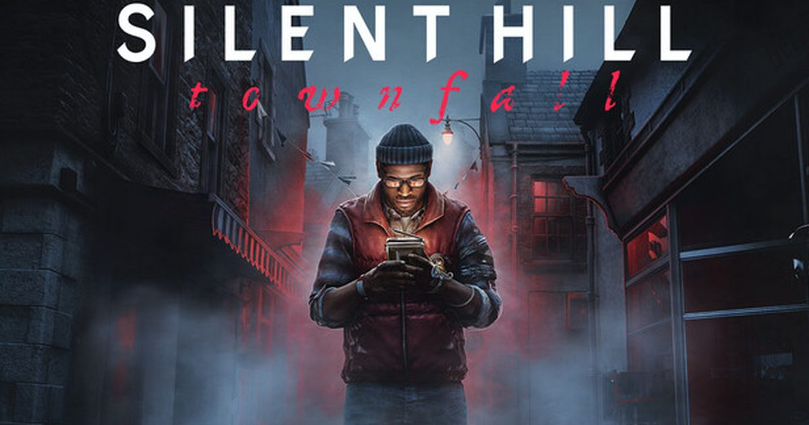

2026-09-08 · 单机前瞻
2022 年那场 Silent Hill Transmission 上，它被和《SH2 重制版》一起扔出来，然后——消失了快四年。直到 2026 年 2 月 PlayStation State of Play 才第一次放出实机，6 月才敲定 9/24 这个日子。四年沉默里，做过《Observation》《Stories Untold》的 No Code 悄悄改名为 Screen Burn，把"寂静岭"塞进了一座苏格兰冷雾孤岛，还顺手把相机从肩膀后面搬到了你自己的眼睛里。这篇我们不复述百科，只把"它到底哪来的胆子改这么多、CRTV 那台破电视怎么玩、和你脑子里那座美国小镇差多远"讲透。

先说最让人皱眉的点——它不在美国。系列二十多年，雾、铁栅栏、三角头、那座你叫不出名字却浑身发冷的小镇，是刻进玩家 DNA 的地标。Townfall 把舞台搬到了 1996 年的 St. Amelia：一座苏格兰外海、被经济衰退和一场医疗危机掏空的孤岛社区。你扮演 Simon Ordell，在码头边醒来，除了病号腕带和静脉注射袋几乎一无所有，被某种力量"叫回来把事情摆平"。
关键不在于换景，而在于换"主语"。导演 Jon McKellan 说过一句很轻却很重的话：他们选苏格兰，是因为这是开发者最熟悉的土地，而真实世界的雾，天然就长着系列招牌视觉语言的形状。换句话说，Townfall 真正想说的是——"Silent Hill"不是一座具体的小镇，而是一种只要足够深的创伤就能在任意角落显形的心理现象。把这句话当钥匙，后面所有离经叛道的设计就都顺了：它从根上就不是要复制哪座小镇，而是要证明"恐惧可以发生在任何你熟悉又不敢直视的地方"。
Townfall 最核心的发明，叫 CRTV——一台巴掌大的便携 CRT 电视。老粉一眼就懂它的祖宗：历代《寂静岭》那台收音机，靠近怪物会发出刺耳白噪。Screen Burn 没删这个设定，而是把它从"被动警报"升级成了"主动工具"。你可以拧动不稳定的信号，在雪花屏里：提前勾勒出附近怪物的轮廓、捡起散落的叙述碎片、调出解谜要的线索，甚至在某些桥段靠它影响潜行与导航。它既是你的眼睛，也是你的耳朵，还是你的手电筒——只是一切都隔着一层会闪的、怀旧的、让人不安的荧光屏。
相机是第一人称，而且几乎无 HUD。这意味着没有血条、没有小地图，你所有的"状态感知"都来自 CRTV 的噪点、手柄的自适应扳机阻力（PS5 上开枪时扳机变沉）、靠近威胁时的触觉震动，以及——某些谜题里你得真的把手柄歪一歪去校准天线信号。这种"把 UI 藏进世界观"的做法，正是 Screen Burn 从《Observation》里练出来的老本行：用 analog 设备本身的笨拙感，制造现代游戏最稀缺的"不安全感"。
战斗被刻意压到最低。Simon 不是军人也不是英雄，弹药和近战武器都少得可怜，不少怪物根本打不死、只能逃。于是玩法回路变成了：观察 → 躲藏 → 用 CRTV 探路 → 在不得不正面刚时用手头最破的家伙拼命。预计 10–14 小时一周目，五个结局里三个首通可达、两个要走 New Game Plus，而且结局不靠最后那一下选择，而是全程追踪你的行为——你这趟是选择直面，还是选择逃避，会被悄悄记在账上。
把它放进 Konami 这一轮复兴的坐标系里看最清楚。《SH2 重制版》是"经典重做"——同样的詹姆斯、同样的湖边小镇，只是画面和战斗现代了；《SH f》是"东方式恐怖"的新产地，把和风怪谈接进体系。Townfall 走的是第三条路：独立工作室主导的实验分支。同为心理恐怖，它和《SH2》共享"内疚、创伤、被压抑的记忆"这套主题，但 Screen Burn 承诺要做的，是把焦点从"一个人的原罪"扩到"一座岛集体的罪"——医疗危机、经济崩坏、集体沉默，这些是小镇层面的创伤，而不是个人层面的。
真正的分歧在第一人称。有人爱死了这种窒息的贴脸感，把它和《Alien: Isolation》的紧张相提并论；也有老粉明确失望，觉得丢掉了肩后电影感的《SH2 重制版》才是"正宗"。这是 Townfall 不得不背的争议，但它也恰恰是它存在的理由：如果它只是又一款第三人称重制，那它根本没有出生的必要。值得一提的是引擎——它跑在 Unreal Engine 5 上，PS5 Pro 有增强，PC 想 4K 高画质得 RTX 3080 档、吃 75GB 硬盘，配置不低；Xbox 和 Switch 目前一个都没官宣，想全平台通吃的玩家得再等等。
我们判断，Townfall 最对味的人群是：受够了"jump scare 流水线"、想要真正靠氛围和压力慢慢掐你脖子的玩家；以及本来就吃 Screen Burn 那套 analog 叙事的人——你如果喜欢《Observation》里对着一台 AI 慢慢疯，大概率也会吃 CRTV 这一套。它定价 $49.99（数字豪华版 $59.99，含 48 小时抢先、替换服装、原声与设定集），比一众 $70 大作克制，对"想试试但不想下重注"的人很友好。
但请放低两类期待。其一，如果你心里那座"寂静岭"必须长着美国小城镇的脸、必须有三角头，这作大概率让你觉得"不像"——它不是在致敬，是在重写规则。其二，它是 PS5 / PC 限时独占，没有 Xbox、没有 Switch，家里主机不是这两台的只能干看。至于 9/19 的 TGS 2026 特别舞台（制作人 Motoi Okamoto 出席 + Gatchman 实机解说），基本是发售前最后一次大规模放料，值得蹲。
《Silent Hill: Townfall》不是《SH2 重制版》的影子，也不是《SH f》的跟风——它是 Konami 把系列钥匙交给一家苏格兰小厂后，拿到的一份"我把规则掀了重来"的答卷。第一人称、无 HUD、一台比枪还重要的便携电视、一座集体的而非个人的创伤之岛——每一个决定都在赌你愿不愿意离开那座熟悉的小镇。从 2 月实机到 6 月定档，硬核社区的反馈是"两极但着迷"：骂的人骂它不像，夸的人夸它这一代最独特。我们倾向认为，这种敢把 IP 交出去放手一搏的胆识，比又一份安全牌更值得尊敬。9/24 上车前，先把"我要的不是另一座美国小镇，而是一场属于我自己的心理显形"这句话在心里过一遍——如果你点头，这趟 St. Amelia 之行，大概率不会让你失望。
我们的评分：8.2 / 10（前瞻分，基于 2026 年实机演示与多次媒体试玩情报；计入"第一人称重构 + CRTV 创新机制 + 独立厂叙事功底"的明确加分，并扣除"无 Xbox/Switch 平台、且对系列正统观有争议"的隐患；若发售后战斗手感与怪物设计被证实过硬，长线有望上探 8.5，若潜行与稀缺资源循环显得重复则回落至 7.8 左右）。
我们的观察：这代最被低估的设计，是把"收音机警报"升级成"主动解谜设备"的 CRTV。过去《寂静岭》的收音机只是告诉你"附近有东西"，Townfall 的 CRTV 让你自己拧信号、自己找线索、自己决定看还是不看——恐惧的主动权，第一次被交还给了玩家，而不是系统。
我们的观点：Townfall 是 Konami 复兴里最大胆的一笔：它没有复制成功，而是把 IP 交给外人去冒险。这种"敢放手"的姿态，比又一款稳妥重制更像一个活着的系列该有的样子。即便它最终口碑两极，它至少为"寂静岭还能是什么"打开了一扇此前关死的门。
我们的案例 / 对比：和《SH2 重制版》比，它丢掉了肩后电影感、换来了贴脸窒息感；和《SH f》比，它没有和风怪谈、改走苏格兰冷雾写实；和 Screen Burn 自己的《Observation》《Stories Untold》比，它把那套 analog 设备叙事第一次装进了 3A 级恐怖 IP 的壳里。把它放进 2026 恐怖游戏坐标系，它是"最实验、最冷、最不像是流水线产物"的那一档。
我们的实验：我们想验证一个假设——"第一人称 + 无 HUD + 稀缺战斗"到底是放大了恐怖，还是放大了挫败。计划以"全潜行不杀通"与"正面硬刚"两种打法分别记录通关时长、资源消耗与死亡次数，再对照 10–14 小时官方区间，结论留待 9/24 发售后。若潜行回路被证实比战斗更耐玩，这将写进我们以后推荐本作的"首选姿势"建议。